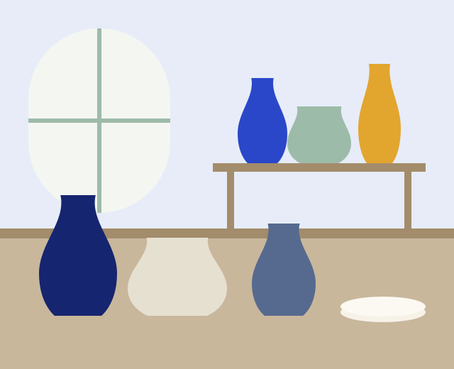

Обо мне
Лепить начала в 2014 году. С тех пор делаю то, чем хочется пользоваться самой.

Мастерская «Круг»
Я работаю с шамотной глиной и фарфором. Глина шершавая, держит форму и хорошо переносит высокую температуру. Фарфор тонкий и звонкий, но капризный.
Каждая вещь проходит через мои руки от первого куска глины до последней глазури. Поэтому одинаковых чашек у меня нет: у каждой чуть своя ручка и свой оттенок.
По субботам приходят гости. Они пробуют круг, портят первую заготовку, потом делают вторую и уносят домой что-то своё.
Как рождается чашка
Глина
Замешиваю и выгоняю воздух. Пузырь внутри заготовки лопнет в печи.
Формовка
Центрирую ком на круге, вытягиваю стенки, срезаю лишнее у основания.
Первый обжиг
Сухую заготовку обжигаю до 950 °C. Она становится прочной, но всё ещё впитывает воду.
Глазурь
Покрываю глазурью и обжигаю второй раз. Цвет проявляется только после печи.
Что происходит в печи
Печь нагревается около десяти часов, а остывает ещё сутки. Открывать её раньше времени нельзя: глазурь треснет.
Путь к глине
- 2014Первое занятие на гончарном круге. Вышла кривая миска, она до сих пор стоит дома.
- 2017Своя печь и первая мастерская на двоих с подругой.
- 2020Первые занятия для друзей, потом для друзей друзей.
- 2023Переехала в мастерскую «Круг» и открыла запись на субботние группы.
- 2026Делаю серии посуды для кофеен и принимаю частные заказы.